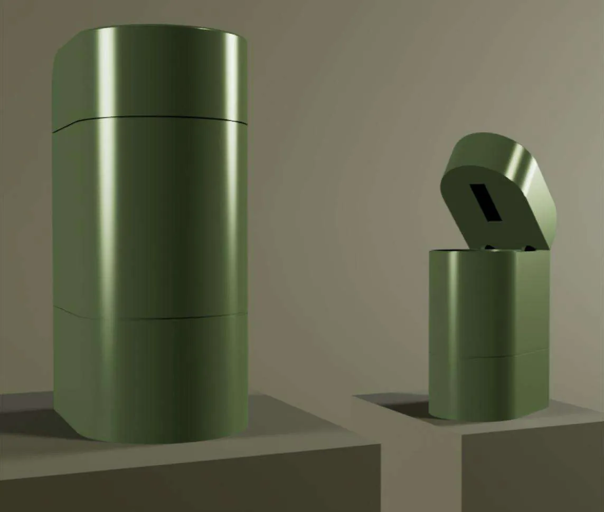
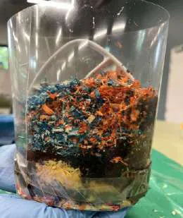
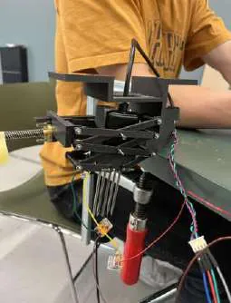
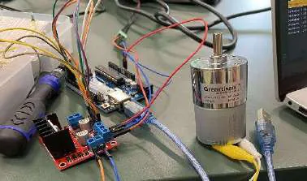
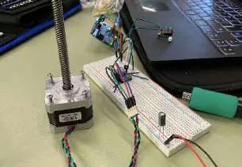
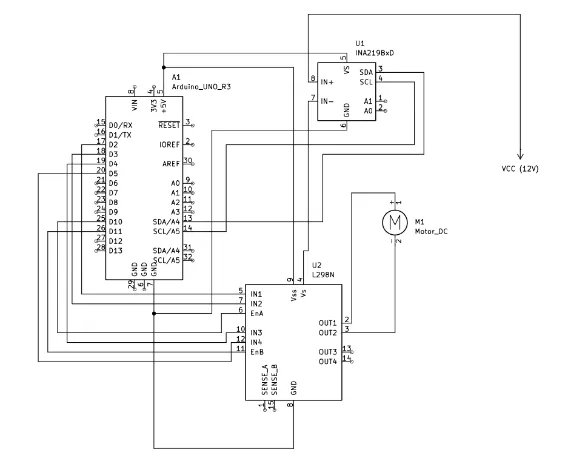
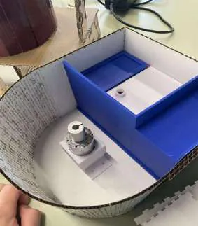
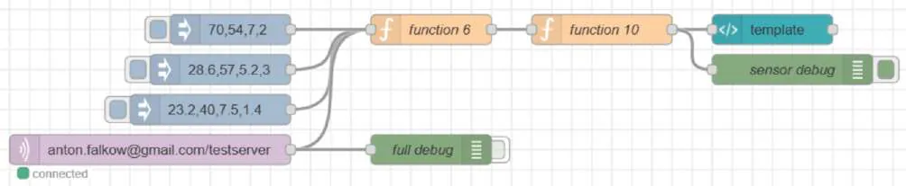

Course 41029 Design of Mechatronic Systems 2 · DTU · team of 8
Compost Buddy: Smart Compost Unit
A compost bin for people in apartments that watches its own temperature, moisture and pH, stirs itself and adds water when needed.
- Context
- Course 41029, DTU
- Team
- 8 people
- My role
- Electronics, mixing mechanism, water handling, CAD, BOM
- Tools
- ESP32, Arduino, Node-RED, MQTT, CAD
- 4 L
- inner container
- 1.5 L
- water tank
- 3
- subsystems: stirring, sensor lift, watering
What we built
Compost Buddy is a compact compost container for people in apartments. It measures the compost, stirs it, and adds water when needed; the user follows it on a dashboard.
- A 4 L removable inner container and a 1.5 L water tank.
- A stirring arm on a geared 12 V DC motor, driven through an L298N H-bridge. An INA219 current sensor detects when the motor stalls, and the arm reverses.
- A scissor mechanism on a stepper motor (DRV8825 driver, endstops) lowers the soil sensor into the compost and lifts it clear before the arm turns.
- The soil sensor reports temperature, moisture and pH over RS485. Water is added through a diaphragm pump on a transistor latch circuit.
- An ESP32 publishes the readings over MQTT to a Node-RED dashboard that alerts the user when a value crosses a threshold.
- Control rules from the literature: keep moisture around 40–60 %, and add water if pH falls below 6.


My part
We took the unit from design brief to a full systems-integration prototype in sprints, following the V-model.
- Electronics and sensor selection.
- The motorised mixing mechanism, with its scissor and fixation hardware.
- Water-level sensing and water handling.
- The CAD model and the bill of materials.
Results and limits
The beta prototype worked as a self-contained system that measures and turns compost. We tested it with sawdust and coffee grounds, not real compost.
On the way we lost a power supply and an Arduino, and had to work through communication problems between the components. A peristaltic pump would not work with our tubing, so we switched to a diaphragm pump. After the design review we made the inner container and stirring arm removable for cleaning. The final unit came out larger than planned because of the size of the mechanical parts.













